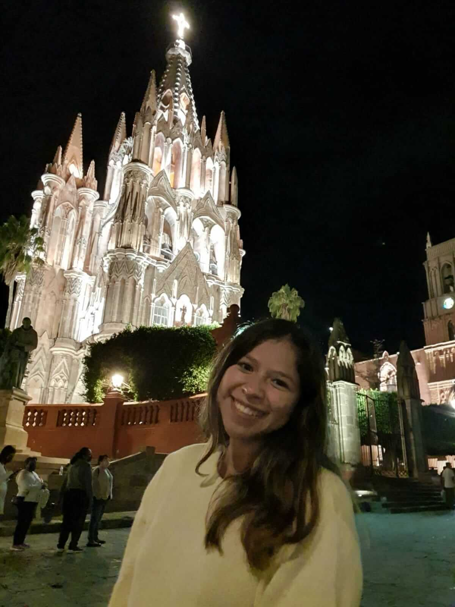
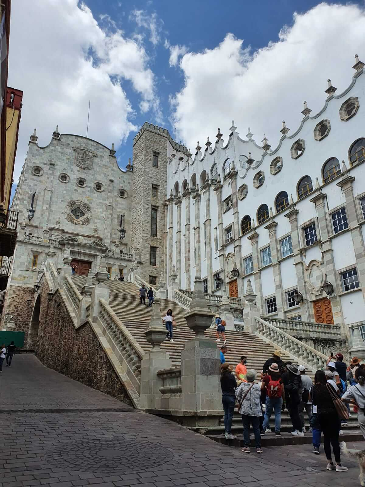
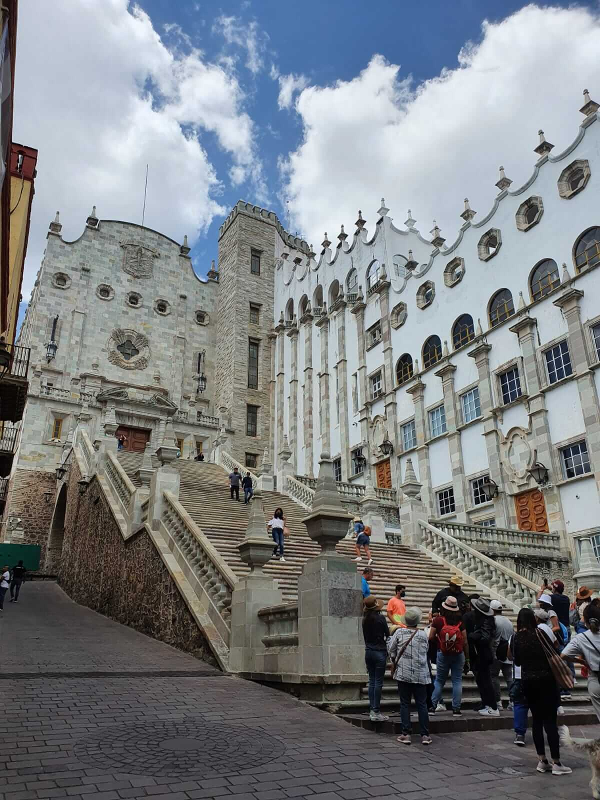

ABOUT
I’m a front-end developer with a free sould based in Mexico Since 2021, I've enjoyed designing interfaces,creating, building solving logic, learning new technologies and growing in the process. When I'm not coding, you'll find me walking through the city, playing with my pets, dancing, working out in the gym, spending time with my love people or trying something new.



 


SKILLS
HARD SKILLS
- JavaScript
- HTML/CSS
- React JS
- Storybook
- PrimeReact
- Figma
- Firebase
- NodeJS
- Git/GitHub
- Agile Methodology
SOFT SKILLS
- Self-learning
- Proactivity
- Teamwork
- Solution oriented
- Organized
- Effective Communication
RANDOM FACTS
Random facts
- I drink a lot of tea and I love the ones with dehydrated fruit (the guava punch is one of my favorites).
- I was born with the rhythm to dance and feel integrated.
- Code and design are my zen time except when I can't fix a specific problem for a lot of hours.
- I love to play with my family and pets.
- I love spending time with myself, is relaxing.
- I want to live in at least 3 different parts of the world.
- Always I want to learn or try new things.
- I walk through the city or go somewhere new when the routine overwhelms me.
MY STORY
Okay, find a comfortable place and a drink. For some people, it is easy to find their vocation for others not as much as was my case, so I think that if something calls you with all your strength you should always choose to do it regardless of the opinions of others in the end if you are wrong it will be an experience but if you will not know to search and find your passion and your happiness. The truth is that I wanted to study dance, languages and music but solving problems, the exact sciences and helping nature have always caught my attention, so after a talk with my mother I ended up applying to the university. She wanted me to study a less artistic career and said that if I didn't stay, she would let me do what I wanted but mothers always know something else so I entered industrial chemical engineering with a speciality in the environment but I couldn't leave the artistic part so I continued dancing and studying. While the semesters of the degree passed, I came across a subject where I learned Matlab and programming came into my life. Almost all the guys I took that subject with already had experience and I knew the class was in Spanish but I had no idea what they were talking about so even though I studied I failed :) but I tried it again and discovered that it was something that I liked like that I decided to change careers where I could combine my creative and logical side, after a programming Bootcamp I started my career at Brigham Young University - Idaho in applied technology, so here we are, learning, growing and enjoying the journey.